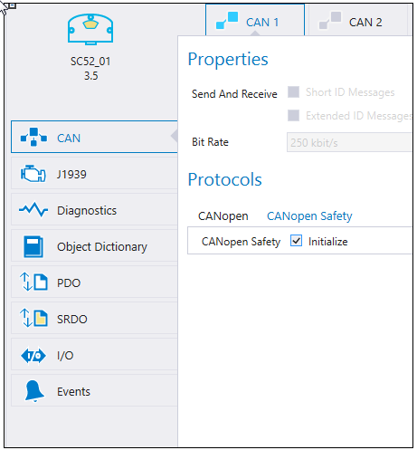

The SRDO tab is only available for devices that support CANopen Safety. CANopen Safety protocal has to be initialized in the CAN tab

|
|
The SRDO tab is only available for devices that support CANopen Safety. CANopen Safety protocal has to be initialized in the CAN tab
 |
This topic describes how the transmit and receive SRDO messages are added and configured
To add an SRDO message:
Select the CAN channel from the tabs
Then select icon from the Transmit SRDOs section or icon from the Receive SRDOs section for manually added receive SRDO
Then add the variables that should be transmitted.
To delete a SRDO message:
Select the SRDO message
Then select icon from the Transmit SRDOs section or icon from the Receive SRDOs section
Variables can be added to SRDO messages directly on the SRDO tab. These variables are automatically added to the Object Dictionary as RAM parameters.
To add an SRDO Variable:
Open the device's SRDO tab and select the correct CAN channel
Add an SRDO
Start typing a variable name and press ENTER
A dialog box opens (see the image below). A description of the variable can be added. Select the Data Type and click Create New Variable.

The created SRDO Variable is automatically added to the Object Dictionary
|
|
SRDO Properties are always configured in the device where the SRDO message is created:
|
The following table describes the configurable fields of each SRDO.
Fields with grey background are hidden by default. Click Advanced.. to show them in PDO Properties section.
|
Property |
Description |
|
SRDO Number |
|
|
COB-ID |
COB-ID (Communication Object ID) is an unique identifier for an SRDO messag. MultiTool Creator automatically assigns the COB-ID according to the SRDO number. |
|
COB-ID Inverted |
COB-ID for the redundant message that is used to validate the SRDO message. MultiTool Creator Automatically assigns the COB-ID according to the SRDO number. |
|
DLC |
Data Length Code, the length of the data field in bytes. |
|
Refresh Time |
Transmission rate of the SRDO message. |
|
Safety Cycle Time |
Monitors the cyclic transmission rate. |
|
SR Validation Time |
Maximum time between the plain and the inverted SRDO message. |
When configuring a transmit SRDO, the Received By setting can be used to define the devices that receive the SRDO. The Received By list shows all the devices in the same network. To view the settings of a unit, select the unit name listed under Received By.
Selecting the devices from the Received By list adds
the transmit SRDO to be received by the other device(s)
the SRDO variables to the receiving device's OD
For example,
Transmit SRDO is added to the Frame device on the SRDO tab
in the SRDO's Received By settings, Cabin device is selected (see the following image)

on the Cabin Configuration > SRDO tab, the Frame SRDO is listed to the Receive SRDOs table
Also, the Frame SRDO variables (JoystickX, Buttons) are automatically added to the Cabin OD with the prefix Frame_
The Receive SRDOs section on the SRDO tab lists all the SRDOs that are transmitted on the same network. The first column in the list shows the following information:
The SRDO number
if checked, the message is received
The name of the transmitter
All other columns are variables that are included in the SRDO message.
The Variable Properties show the variable definition: Name, Data Type and Description selection.
|
Property |
Description |
||||||||||||||||||||||||||||||||||||||||||||
|
Name |
Name of the SRDO variable.
|
||||||||||||||||||||||||||||||||||||||||||||
|
DataType |
The Data Type is one of CODESYS' variable types:
STRING type variables cannot be mapped into SRDO. BOOL type variables cannot be mapped into SRDO. REAL type variables cannot be mapped into SRDO.
|
||||||||||||||||||||||||||||||||||||||||||||
|
Description |
A description of the variable, defined by the user.
|
Epec Oy reserves all rights for improvements without prior notice.
Source file topic200202.htm
Last updated 25-Jun-2025